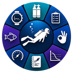
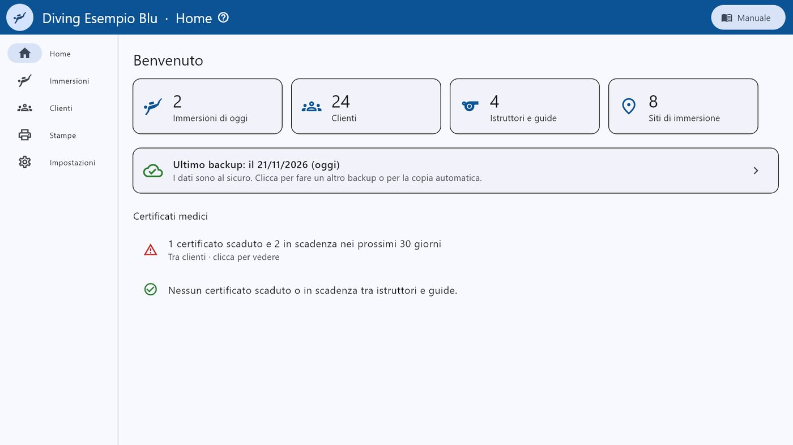
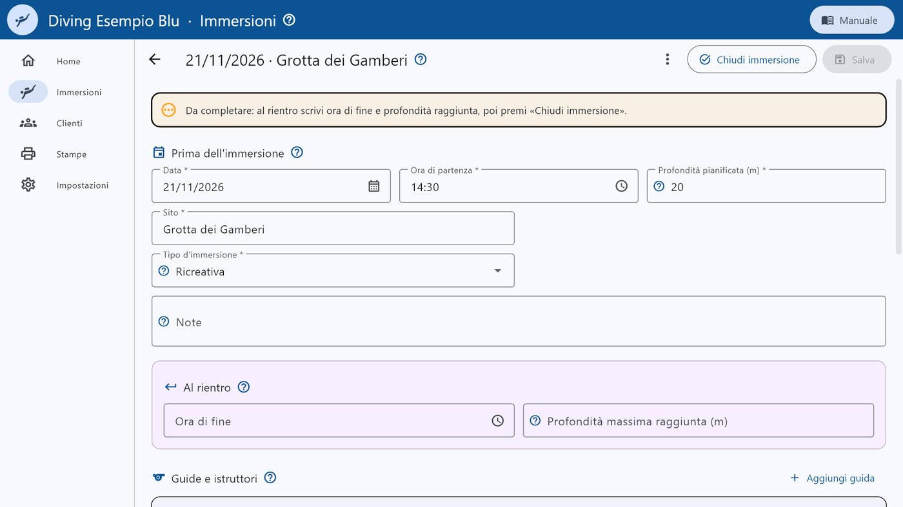
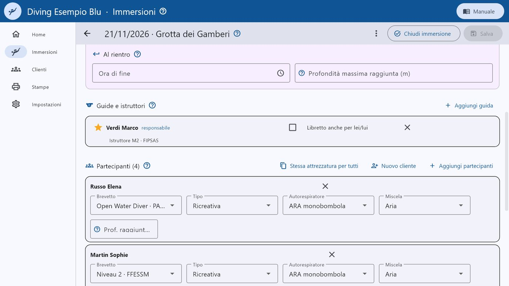
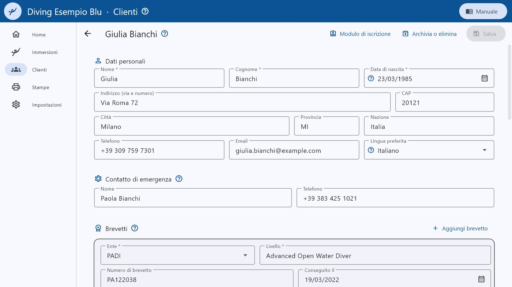
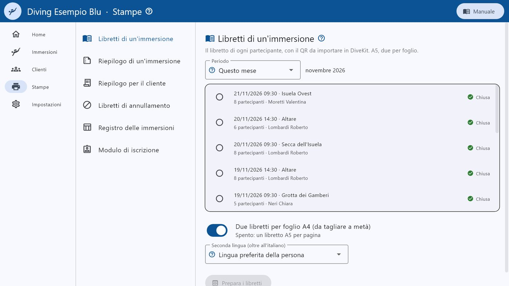

Il registro delle immersioni, semplice e gratuito
Per diving center e associazioni subacquee: immersioni, partecipanti e libretti con QR firmato, come chiede la legge 70/2026. I dati restano sul tuo computer.
Gratis per Windows. Nessun acquisto, nessun abbonamento.
Cosa c'è dentro
Tutto quello che serve per il registro e i libretti, già pronto: si installa dallo Store e si comincia.
Registro delle immersioni
Prima di partire data, ora, sito, guide e partecipanti con il brevetto; al rientro ora di fine, profondità, autorespiratore e miscela, come chiede l'art. 12.
Clienti, soci, istruttori e guide
Una scheda per persona: contatti, contatto di emergenza, brevetti e certificati medici con lo storico, documenti e foto allegati.
Avvisi
Il programma ti avverte se a un partecipante manca il brevetto o se il suo certificato medico è scaduto.
Libretti con QR firmato
Ogni partecipante riceve il suo libretto, in italiano e nella sua lingua (6 lingue), con il QR firmato dal sigillo digitale del diving.
Stampe
Registro di legge, riepiloghi delle immersioni, libretti di annullamento e modulo di iscrizione: in anteprima, da stampare o salvare in PDF e PNG.
Archivio cifrato e backup
L'archivio è cifrato sul computer. Backup chiusi con una password e copia automatica in un'altra cartella.
Più persone, un solo archivio
Tutti gli account di Windows del computer usano lo stesso archivio, uno alla volta.
Manuale e «?»
Un «?» accanto a ogni voce spiega a cosa serve e perché conviene; il Manuale completo si apre con F1.

Compatibile con Nautilus DiveKit
Il sub inquadra il QR del libretto con l'app gratuita Nautilus DiveKit (Android e iPhone) e l'immersione entra nel suo logbook, con i dati firmati dal diving. Chiunque può verificare il QR con la pagina web gratuita: il formato LDI è aperto e documentato.
Con DiveKit il sub può anche mandarti, in un solo PDF, i suoi brevetti, il certificato medico, l'assicurazione e, se vuole, i suoi dati personali: lo alleghi alla sua scheda nel Registro, così hai tutto a portata di mano.
Perché è diverso
- Gratis davvero: nessun abbonamento, nessuna funzione a pagamento
- Niente pubblicità e niente account da creare
- I dati restano solo sul computer del diving: il programma non manda niente a nessuno
- Formato aperto: chiunque può verificare un libretto, senza programmi da installare
- Firma digitale: un libretto modificato non risulta più valido
- Funziona senza internet
Come si presenta





The dive register, simple and free
For dive centres and diving clubs in Italy: dives, participants and dive logs with a signed QR code, as required by Italian law 70/2026. Your data stays on your computer.
Free for Windows. The program is in Italian; dive logs are printed in 6 languages.
What is inside
Everything you need for the register and the dive logs, ready to use: install it from the Store and start.
Dive register
Before leaving: date, time, site, guides and participants with their certification. Back on shore: end time, depth, breathing apparatus and gas, as required by art. 12.
Customers, members, instructors and guides
One record per person: contacts, emergency contact, certifications and medical certificates with their history, attached documents and photos.
Warnings
The program tells you when a participant has no certification or when their medical certificate has expired.
Dive logs with a signed QR
Every participant gets their own dive log, in Italian and in their language (6 languages), with a QR code signed by the dive centre's digital seal.
Printouts
Legal register, dive summaries, cancellation logs and registration form: preview, print or save as PDF and PNG.
Encrypted archive and backups
The archive is encrypted on the computer. Password-protected backups and an automatic copy to another folder.
Several people, one archive
Every Windows account on the computer uses the same archive, one at a time.
Manual and «?»
A «?» next to every option explains what it is for and why it helps; the full Manual opens with F1.
Works with Nautilus DiveKit
The diver scans the QR code on the dive log with the free Nautilus DiveKit app (Android and iPhone) and the dive goes into their logbook, with the data signed by the dive centre. Anyone can verify the QR code with the free web page: the LDI format is open and documented.
With DiveKit the diver can also send you, in a single PDF, their certifications, medical certificate, insurance and, if they wish, their personal details: attach it to their record in the Registro and you have everything at hand.
Why it is different
- Truly free: no subscription, no paid features
- No ads and no account to create
- Data stays only on the dive centre's computer: the program sends nothing to anyone
- Open format: anyone can verify a dive log, with nothing to install
- Digital signature: a dive log that has been altered is no longer valid
- Works without internet
What it looks like
Download the program
Free for Windows. The program is in Italian; dive logs are printed in 6 languages.